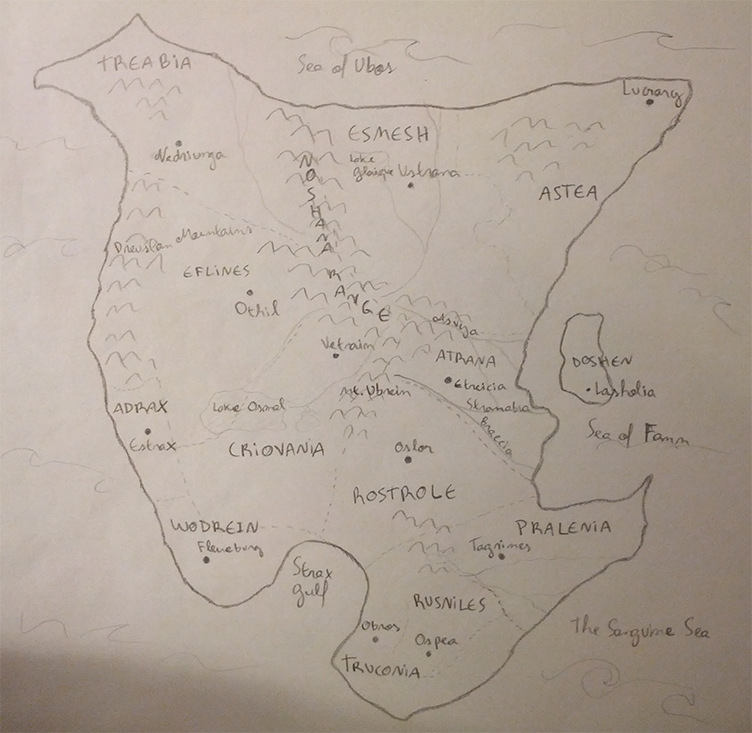

Worldbuilding through Mapmaking
Part One: Drawing your map
Material
Here's what you'll need:
- A blank sheet of paper
- A pen (or a pencil, if you promise not to touch your eraser!)
- Optionally, an image editor instead of the above, but don't touch the eraser tool
Instructions
- Draw a bunch of dots on a blank paper or document.
Try for something between 8 to 16 for starters. Too few might make for a dull map and too many will give you too much work. They don’t need to be spaced out evenly, but try not to make them too close together. (Of course, you can do whatever you want.)

- (optional) Draw a contour for your map, making sure all the dots stay inside. (Or not! You could have an island.)
This will be the shape of your continent. If you feel like you’re just drawing part of your continent and the whole thing is too big to fit in one sheet, you don’t need to do this.
- Draw some mountains.
You can do upside down V’s, a bunch of zigzags, whatever works for you. If you’re on your computer, you can paint over the map to represent higher areas. (For example, the higher it is, the redder it gets, and low areas can be green or something of the sort. Remember those topographic maps in high school?)
- Let’s draw rivers. Draw some long lines, have them join or separate like Y’s, anything you like.
Remember that water flows from higher ground to lower, so you want your rivers to flow from your mountains to lower ground and not the other way around. If you drew the continent edges, you can have those rivers go out to the sea. You can also have the rivers flow into lakes, which will usually be in spots that are at lower elevation than the rest of the ground (so the river doesn't keep flowing away). Remember that in old times, civilization usually started near rivers, so you may want to have some of those rivers be close to your dots.
- Draw dotted lines separating those dots from before.
Be creative! Let them come from everywhere. These will be your country borders. Rivers and mountain ranges can also be used as borders. If you feel like you have don't have enough dots and your countries will be too large, feel free to add more as well as new mountains and rivers. Most importantly, don’t erase anything!
- Give names to stuff!
Those dots are your capitals. You also want to name your countries, your rivers, your mountains, maybe even your plains if you were painting the map and figured those out.
If you can’t come up with your own names, no problem. You can use name generators available on the internet if you want, or you can leaf through the bibliography section of your high school history book and pick out cool sounding surnames. Whatever works! You also don’t have to name everything yet, of course.

Part Two: Extracting information